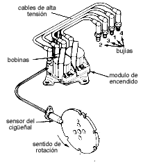
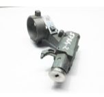
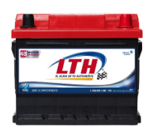
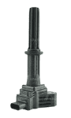
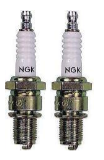

El sistema de encendido del motor implica la producción de una chispa en las bujías y su distribución en los cilindros del motor en el correspondiente orden de funcionamiento.
¿Para qué sirve?
El sistema se encarga de movilizar el cigüeñal del motor por medio de un motor eléctrico conocido como marcha. Así como también producir la chispa dentro de la cámara de combustión necesaria para encender la mezcla de aire combustible.

Partes
Entre sus partes principales se pueden mencionar las siguientes:
•Llave de contacto: Le permite al conductor encender el automóvil por medio
del cierre de un circuito eléctrico de encendido al momento de girar la llave.

•Batería: Es la encargada de almacenar energía y se encarga de
ofrecerla para que el circuito funcione.

•Bobina: Se encarga de generar corriente de alta tensión
usando la que proviene de la batería y pasándola a las bujías.

•Bujías: Se ubican dentro de los cilindros y es donde se
genera finalmente la chispa que permite la combustión de la mezcla.
La chispa se produce gracias a que el encendido aumenta el voltaje,
así ocurre el salto de energía eléctrica entre ambos electrodos que tiene la bujía.
Son componentes del sistema de encendido del motor de gasolina.
